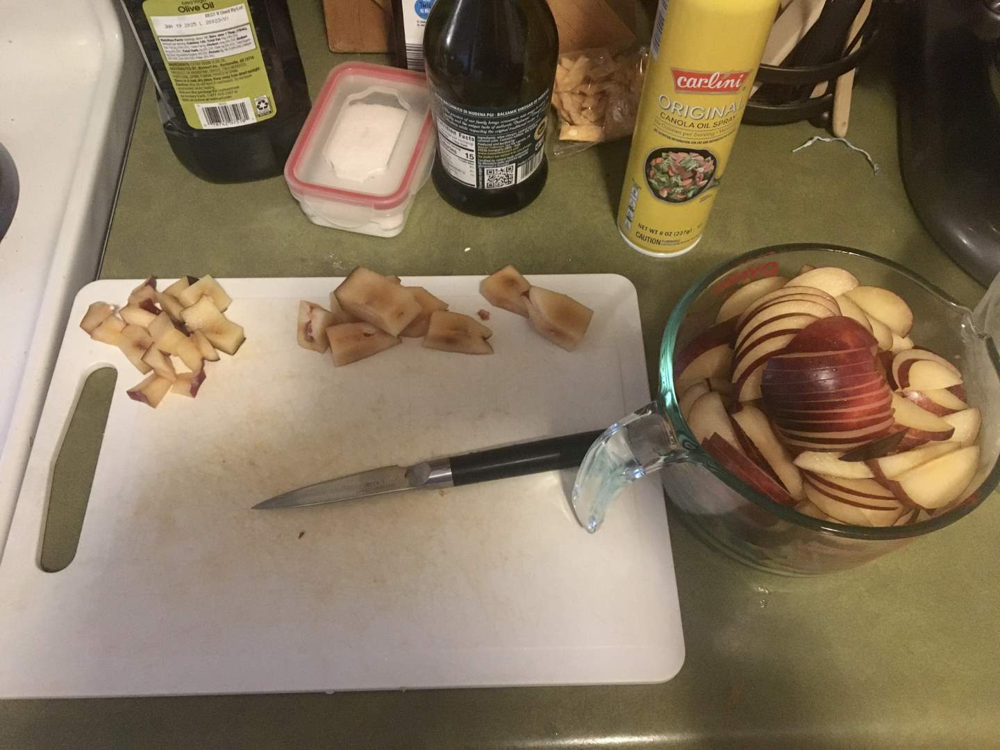
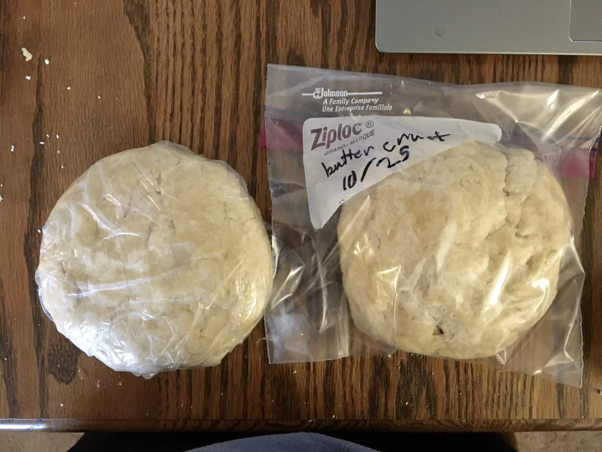
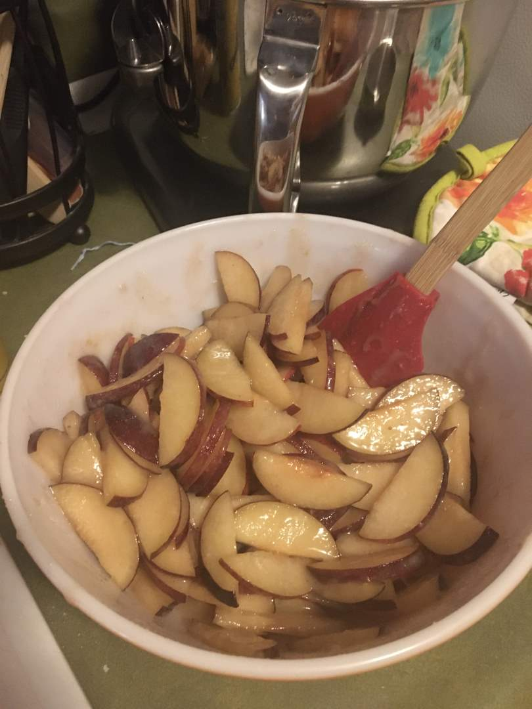
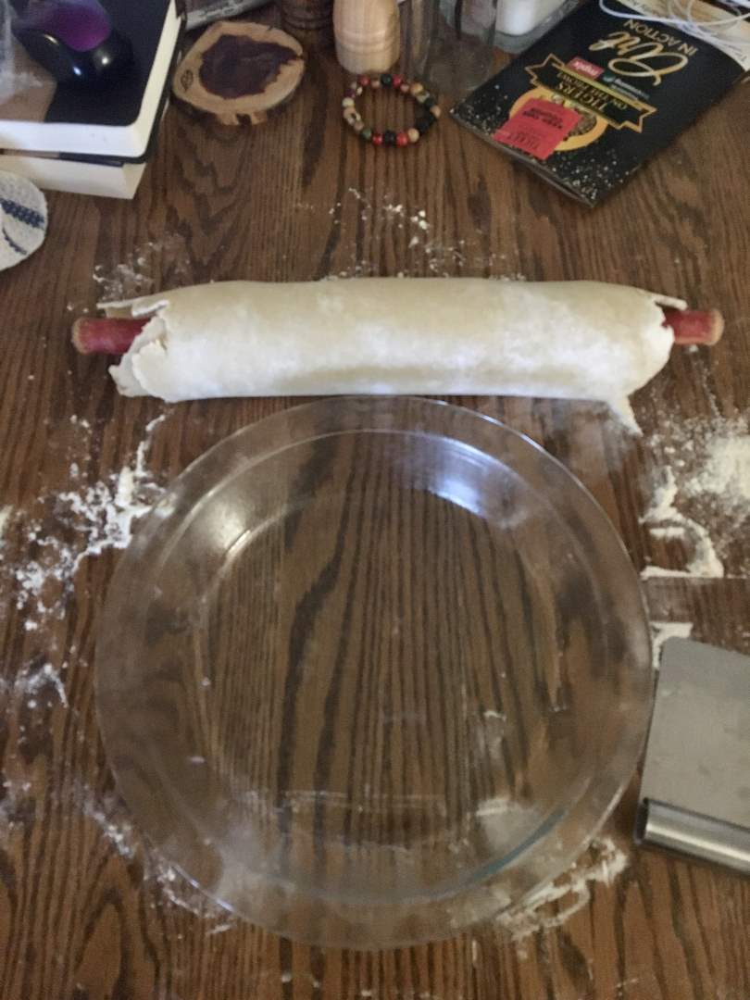
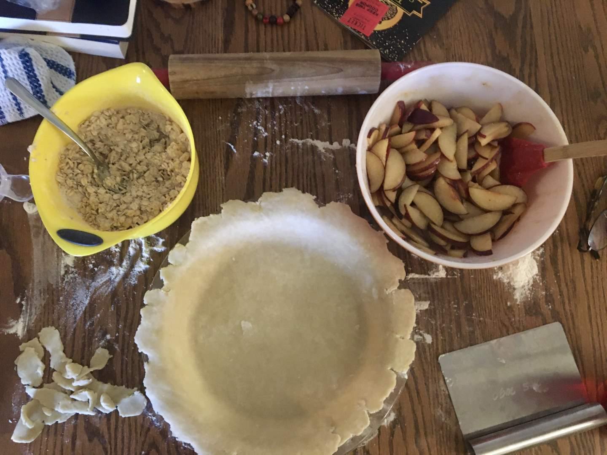
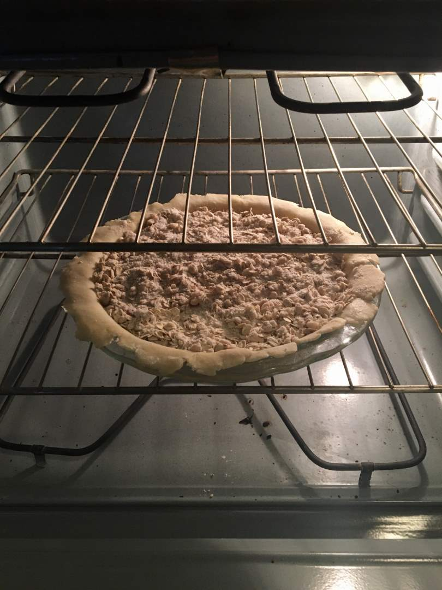
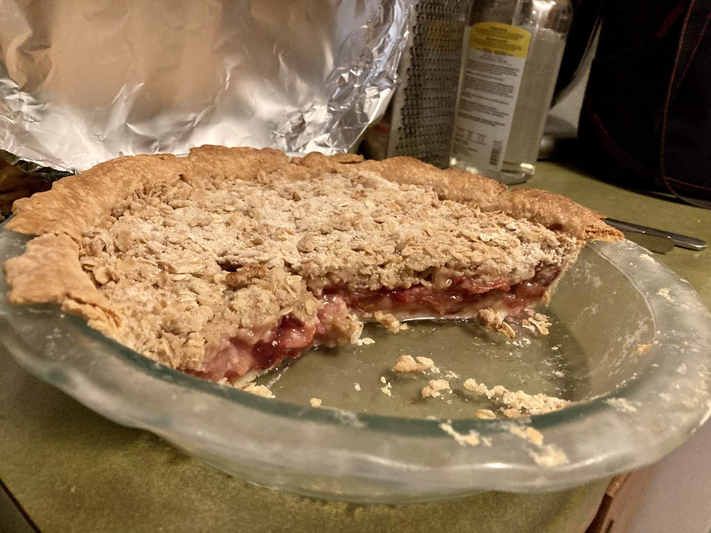

Pie 18: Plum
2023-10-25Filling recipe from Taste of Home.
Crust recipe from Tastes Better From Scratch.
Taste:
Difficulty:
Vibes:
Suggested pairing: ice cream
When asked what I like to do on my days off, I typically say that I play video games, do some household maintenance, read, and hang out with my cat. In reality, 90% of my days off are spent thinking about food. I tend to have pretty circular thoughts about food too, so once a food gets stuck rattling around in my head it won’t escape. This Wednesday, I could not shake the thought of oats. All I wanted was oats. Oatmeal and butterscotch oatmeal cookies and oat streusel (with lots of butter and brown sugar and cinnamon). As the kids say, oats were living rent-free in my head.
The only appropriate response to my insatiable craving was to bake three oat dishes, of course. God was watching out for me that day, because he also provided inspiration for the perfect filling: plums. If you wander listlessly through Walmart long enough, the Lord will intervene miraculously (as a mercy to your soul). Though my original intention was to use the plums for baked oatmeal, a plum pie sounded even more scrumptious, so I tossed aside my original plans to provide the plums with a higher purpose.
Last week, Ben was at home by himself when he made the pie. I was also alone this Wednesday. Therefore I had to make the crust AND the filling, while my preference is to do the latter only. Though daunted, I knew a flaky butter crust would best suit a plum pie. I cast my fear aside to pursue pie nirvana. There were a few hiccups along the way (I poured ice cubes into the shaggy dough and made a double crust rather than a single) but eventually the pie dough was ready to be chilled. I froze the extra crust; it may make an appearance in a future blog post!
While the dough disk chilled, I thinly sliced two pounds of plums, squeezed lemon juice on them, added sugar and spices, sampled the concoction, and then added more spice. During the first taste test, I determined that the filling would benefit from more ginger, a choice Ben later validated. I almost snacked on the filling raw, but managed to refrain, perhaps only through the power of Christ in me (2 Cor. 12:9).
 I rolled out the chilled pie crust to a suitable diameter and successfully wrapped it up around the rolling pin, leading to an easy transfer to the dish. The edges were very uneven, which I tried to mask by creating intentional divots around the dish. I poured in the plum filling and topped it with a streusel topping (with the addition of oats). After popping the pie in the oven I breathed a sigh of relief. At last, the work was done.
We took the pie to Ben’s grandparents’ house and enjoyed it with a central Missouri classic: Tiger Tracks ice cream from Central Dairy. Both desserts were delicious on their own, but I did not mix them because I wanted to appreciate the pie on its own merits. I had been waiting all day for this, after all. And it was AMAZING. The spice mixture was just right, empowering rather than overpowering the natural plum flavors. The crust did not burn on the edges, nor were there any cracks in it. The streusel added texture while also letting the filling shine through. Though the pie’s simplicity does not earn it high marks in vibes, I will certainly make this delicious pie again next plum season.
